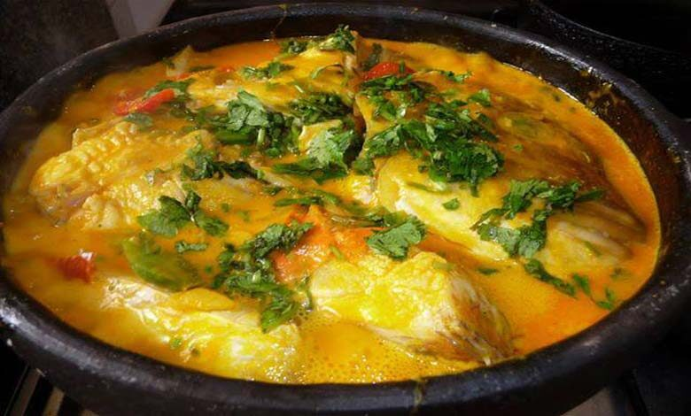

Moqueca is a Brazillian Fish stew with coconut milk, tomatoes and peppers.
It's traditionally served over rice with lime and cilantro.
- White fish- Halibut, Black Cod, Sea Bass , Cod, escolar, etc. (thicker cuts are best)
- Dende - Brazillian Red Palm oil ( or coconut oil)
- Onion
- Carrots
- red bell pepper
- garlic
- chili peppers
- tomato paste
- spices
- fish or chicken stock
- Tomatoes
- coconut milk ( liquid and solids)
- Lime
Steps
- It starts with seasoning the fish. Use black cod, halibut, sea bass, black cod, escolar or any firm white fish (or shrimp) you like.Even shrimp or shellfish (clams or mussels) would work well here.
- In a large saute pan, heat the olive oil over medium-high heat. Add onion and salt, and sauté 2-3 minutes.
- Turn heat down to medium, add carrot, bell pepper, garlic and jalapeno pepper and cook 4-5 more minutes.
- Add tomato paste, spices and stock.
- Mix and bring to a simmer and add tomatoes.
- Cover and simmer gently on medium-low for 5 minutes or until carrots are tender.
- Add the coconut milk and taste and add more salt if necessary.
- Nestle the fish in the flavorful coconut stew, pouring the remaining marinade over the fish and into the stew, and either continue cooking stovetop, spooning the flavorful liquid over the fish for about 3-5 minutes ( until the desired doneness) or for thicker cuts, place in a 350F oven, for 8-10 minutes
- Once done, the Moqueca will have thickened beautifully. Sprinkle with fresh cilantro or Italian parsley and serve with a wedge of lime.